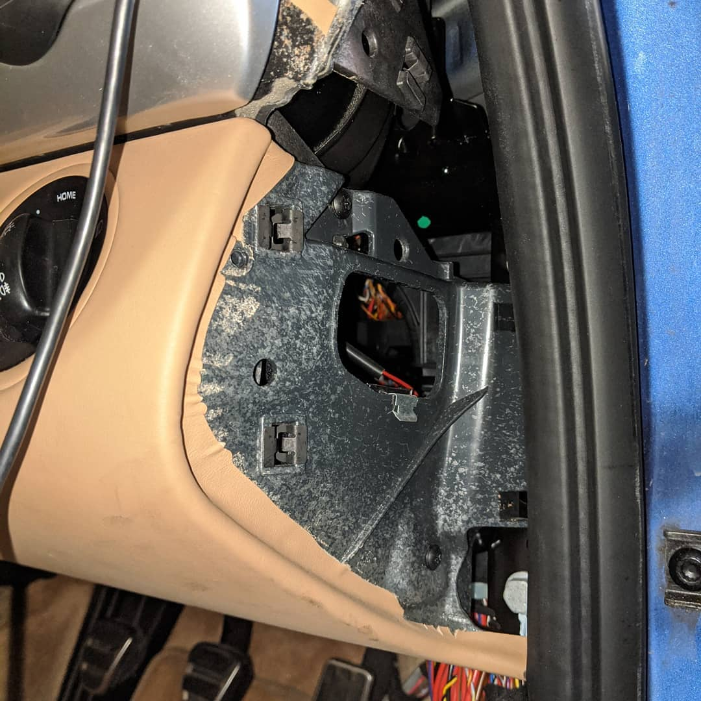

Dashcam install My requirements were to be able to install a Dashcam without visible cables or lasting damage to the car after removal. I achieved this using fusetaps and running the cable under the car trim. 